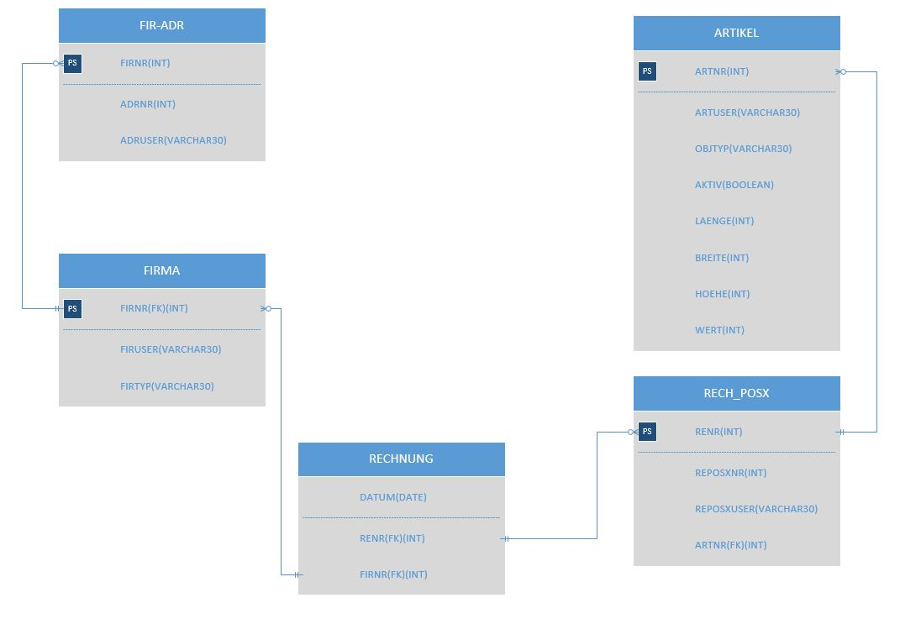

Einführung
SQL ist eine Datenbanksprache zur Definition von Datenstrukturen in relationalen Datenbanken sowie zum Bearbeiten (Einfügen, Verändern, Löschen) und Abfragen von darauf basierenden Datenbeständen. SQL steht für Structured Query Language.
Wichtige Links:
SQL lernen Interaktives SQL Spiel Wikipedia-Eintrag Datenbanken verstehenFür unsere praktischen Anwendungen benutzen wir Elementary OS. Dies ist ein Linux-System. SQL kann auf jedem Linux-System arbeiten.
Relationale Datenbanken
Eine relationale Datenbank dient zur elektronischen Datenverwaltung in Computersystemen. Grundlage des Konzeptes relationaler Datenbanken ist die Relation. Das zugehörige Datenbankmanagementsystem ist das relationale Datenbankmanagementsystem (RDBMS).

Eine relationale Datenbank ist eine Sammlung von Tabellen. In diesen Tabellen sind Datensätze abgespeichert. Ein Datensatz muss eindeutig identifizierbar sein. Dies wird mit einem oder mehreren Schlüsseln erreicht. Ein Schlüssel darf sich nie verändern.
In einem Datensatz sind die eigentlichen Daten vorhanden. Diese Daten können dann mit dem DBMS ausgelesen und verändert werden. Ein Attribut ist einfach die Überschrift einer Spalte dieser Tabelle, wobei die Tabelle die Entität ist.

In diesem Bild erkennen Sie die Zusammenstellung von einer wirklichen Datenbank.
Modellieren
Beim Modellieren entwickelt man ein Datenmodell einer Tabelle. Dies soll einen ersten Eindruck verschaffen und die Struktur der Datenbank festlegen. Sie sollten bei der Modellierung auch schon die Primary- und Foreign-Keys angeben.
Datenmodell
Das am häufigsten verwendete Datemodell ist das relationale Datenmodell. Dies wird in der Regel nur bei Datenbanksystemen angewendet.
Modellieren wird angewandt, wenn Sie noch keine Daten für eine Datenbank haben. Bei gegebenen Daten normalisiert man.
Normalisieren
Das Normalisieren beschreibt die Aufteilung von Attributen in mehrere Tabellen, wobei Redundanzen ausgemerzt werden. Diese werden miteinander verbunden. Das heisst, die Keys werden schon mal gesetzt.
Bei der Normalisierung helfen uns die Normalformen. Die Normalformen sind einzelne Schritte für die Normalisierung von einer Datenbank.
Für die einzelnen Normalformen und die dazugehörigen Begriffe verweise ich auf die Seite:Datenbanken verstehen
Data Definition Language (DDL)
Die Data Definition Language ist eine Datenbanksprache, die verwendet wird, um Datenstrukturen und verwandte Elemente zu beschreiben, zu ändern oder zu entfernen.
Für weitere Informationen zur Data Definition Language empfehle ich die Seite:Techopedia
Data Control Language (DCL)
Die Data Control Language wird für die Verwaltung Zugriffsrechten verwendet. Es gibt hauptsächlich zwei Befehle für die DCL:
- Grant
- Revoke
- Deny
Die Syntax hierbei sieht dann so aus:

Public spricht alle Personen an, wobei Operation die Berechtigung darstellt.
Folgende Privilegien können vergeben und entzogen werden: CREATE DATABASE, SELECT, INSERT, UPDATE, DELETE, EXECUTE and CREATE VIEW.
Mit Grant vergibt man Rechte, mit Revoke entzieht man Rechte und mit Deny verweigert man die Zugriffsrechte.
Data Manipulation Language (DML)
Mit der Data Manipulation Language können Sie Daten schreiben, lesen, ändern und löschen. Es ist die Datenverarbeitungssprache.
Folgend sehen Sie die Syntax der DML:
Mit Insert können Sie Datensätze in eine Tabelle einfügen. Mit Update überschreiben Sie vorhandene Daten. Delete löscht Daten aus einer Relation. Mit Where gibt man an, welche Daten man löschen will. Ohne das Where werden alle Zeilen aus einer Tabelle entfernt.
Data Query Language (DQL)
Diese Sprache befasst sich mit Abfragen. DQL besteht hauptsächlich aus Select-Befehlen
Abfragen werden dann mit Select geschrieben, aber um Daten aus mehreren Tabellen abzufragen benutzt man JOINs. Diese werden weiter im Kapitel 'JOINs' erklärt.
Datentypen
Es gibt verschiedene Datentypen, um anzugeben, welche Daten man verwendet.
Hier eine Liste mit den verschiedenen Datentypen. Diese Angaben stimmen nur mit mysql überein:
Datentypen für Text
| Datentyp | Beschreibung |
|---|---|
| CHAR(grösse) | Kann einen String mit fester Länge beinhalten (Buchstaben, Nummern und spezielle Zeichen) |
| VARCHAR(grösse) | Kann einen String mit variabler Länge beinhalten (Buchstaben, Nummern und spezielle Zeichen).
Man kann bis zu 255 Zeichen angeben, wenn es mehr sind, dann wird der Datentyp zu TEXT umgewandelt. |
| TINYTEXT | Für einen String mit maximal 255 Zeichen |
| TEXT | Für einen String mit maximal 65'535 Zeichen |
| BLOB | Binary Large Objects. Für bis zu 65'535 bytes Daten |
| MEDIUMTEXT | Für einen String mit maximal 16'777'215 Zeichen |
| MEDIUMBLOB | Binary Large Objects. Für bis zu 16'777'215 bytes Daten |
| LONGTEXT | Für einen String mit maximal 4'294'967'295 Zeichen |
| LONGBLOB | Binary Large Objects. Für bis zu 4'294'967'295 bytes Daten |
| ENUM | Lässt Sie eine Liste von möglichen Werten eingeben. Man kann bis zu 65'535 Werte in einer ENUM-Liste eingeben.
Wenn ein Wert eingegeben wird, der nicht in der Liste ist, wird ein leerer Wert eingegeben. |
Datentypen für Nummern
| Datentyp | Beschreibung |
|---|---|
| TINYINT(grösse) | -128 bis 127. 0 bis 255 UNSIGNED. |
| SMALLINT(grösse) | -32'768 bis 32'767. 0 bis 65'535 UNSIGNED. |
| MEDIUMINT(grösse) | -8'388608 bis 8'388'607 UNSIGNED. |
| INT(grösse) | 2'147'483'648 bis 2'147'583'647. 0 bis 4'294'967'295 UNSIGNED. |
| BIGINT(grösse) | -9'223'372'036'854'775'808 bis 9'223'372'036'854'775'807. 0 bis 18'446'744'073'709'551'615 UNSIGNED. |
| FLOAT(grösse, d) | Eine kleine Zahl mit Fliesskomma. Die maximale Anzahl an Ziffern rechts vom Komma wird mit d angegeben. |
| DOUBLE(grösse, d) | Eine grosse Zahl mit Fliesskomma. Die maximale Anzahl an Ziffern rechts vom Komma wird mit d angegeben. |
| DECIMAL(grösse, d) | Ein DOUBLE gelagert als String, erlaubt ein fixes Fliesskomma. Die maximale Anzahl an Ziffern rechts vom Komma wird mit d angegeben. |
Datentypen für Datumsangaben
| Datentyp | Beschreibung |
|---|---|
| DATE() | Ein Datum mit dem Format: YYYY-MM-DD |
| DATETIME() | Kombination von Datum und Zeit mit dem Format: YYYY-MM-DD HH:MI:SS |
| TIMESTAMP() | Ein Zeitstempel mit dem Format: YYYY-MM-DD HH:MI:SS. Geht bis zu 2038 |
| TIME() | Eine Zeit mit dem Format: HH:MI:SS |
| YEAR() | Ein Jahr im zwei-stelligen oder vier-stelligen Format |
Funktionen / Operatoren
MySQL hat viele schon vorhandene Funktionen. Diese werden auch wieder in String-, Zahlen- und Datums-Funktionen unterteilt: